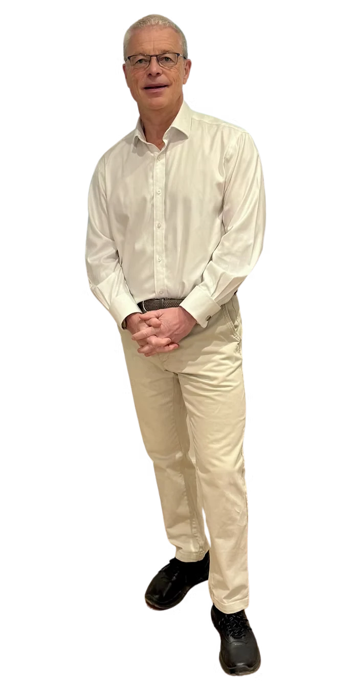

I am Philip Feibusch, founder of Strategic Pause Advisory Ltd.
I have built and sold businesses, including leading the successful sale and post-sale integration of a professional services firm I co-founded to a US SEC-listed consultancy.
I am now a Board Adviser to a technology business and, separately, I am working on a knowledge base creation project, using the latest technology, including AI, on how to preserve and enhance business value in today's business environment.
I have worked in different sectors, across borders and across cultures, on both the frontline and behind the scenes. I have been a managing partner, a senior equity partner, part of a European leadership team, a director, a board adviser, a mentor and a founder. I have worked at the sharp end of business: last-minute refinancing, international sales, asset acquisitions and sales, negotiations, and I have even lived through and survived Black Swan events.
I have also made mistakes, learned from failure, and navigated uncertainty more than once. I have built a strong network too, of people I truly trust.
Experience has taught me leadership is both a privilege and a burden, and the higher up you are, the fewer honest conversations you tend to have.
"If I had one wish, it would be to help empower you, not just to lead, but in turn to empower others as you go."
You can read more about my experience on LinkedIn (opens in new tab), or scroll down for a few words from some of those I have worked with. Or speak to me (opens in new tab).

Testimonials
-
"Philip is on our advisory board. He is easy to work with and brings significant experience, exceptional lateral thinking and he is a problem solver par excellence. He is an invaluable business ally."
Daniel Gorin (opens in new tab)Director & Co-Founder, CheckMade Ltd -
"I have known Philip for over 25 years and worked with him over that period in various guises. He is an extremely clear thinker and has a fantastic ability to 'problem solve' in a logical and concise manner. He is a fantastic mentor and has a wealth of experience in professional services gained on both large organisations and start-ups. Philip would be a great addition to any organisation or team."
Nina Stewart (opens in new tab)Founding Partner, Astraea -
"… Philip combines incredible business acumen with compassion in a way rarely seen in high calibre business. Highly astute numerically but with an uncanny ability to think creatively. Not scared to ask challenging difficult questions to help you find solutions … I highly recommend any professional that wants to flourish to work with Philip."
Jenny Goulding (opens in new tab)Managing Director, Agile HR Consulting -
"We encountered a complex issue that was on the verge of escalating into an expensive and protracted legal dispute. Philip's expertise and experience proved invaluable, guiding us towards an excellent negotiated solution and avoiding litigation. We are grateful for his support as a trusted business ally."
Nick UpshallSapphire Productions Ltd -
"The value that Philip has brought me is exponential. Truly game changing. His experience and skills are shaped by many entrepreneurial years … he brings to me his generous mentorship, it's the ruthless pragmatism and dogmatic discipline to analysis that sets Philip apart. I can candidly say I have no one in my network that does what Philip does for me."
Dan Carey (opens in new tab)Regional Director & GM, Workplace Creations
Watch & Listen
If you want to get more of a feel for what working with me would be like, or are just interested in some insights, have a look at some of the videos, clips, articles and podcasts below.
Reflections and insights on business matters
ArticleIs failure a prerequisite of success? (PDF) (opens in new tab)
Video clip 2We don't need HR, do we?
Video clip 3Empowerment and an external voice
The Crux of the Matter podcast
I was invited onto "The Crux of the Matter", a podcast series by special situations professional services and legal advisory firm Astraea Group (opens in new tab) that examines disruptive events that threaten to sink businesses, blow up brands and destroy value.
Philip Feibusch (opens in new tab), a former equity partner at Arthur Andersen, shares his insider memories of the firm's collapse in the wake of the Enron scandal.
Philip unedited! In-depth interviews
Part 1Philip's journey, and reflections and insights on business sales
Part 2Questions, answers and experiences on his role as business ally
And finally, just for fun: a podcast outtake